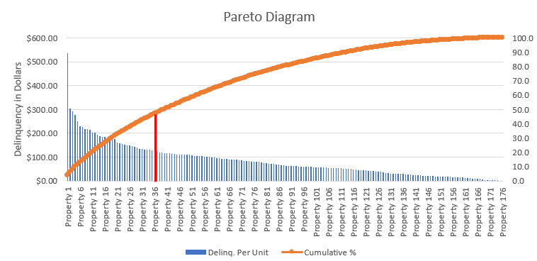
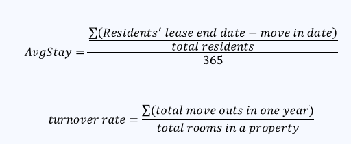
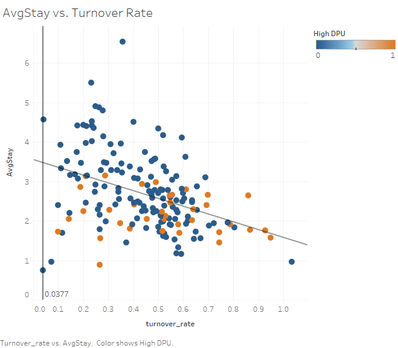
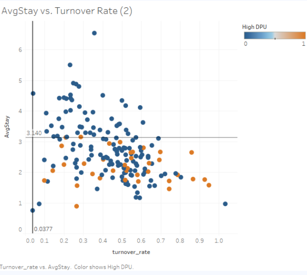

From the archive
Property Management Analytics Using the Pareto Principle
The 80/20 rule applied to 176 properties: where delinquency concentrates, and what average resident stay says about turnover.
Purpose
The Pareto Principle refers to the 80/20 rule – where 20 percent of the causes produce 80 percent of the results. This principle can be used to identify a small group of causes that contribute to the largest results. From a business analytics perspective, this can be an important trend to discover when finding ways to increase revenue, maximize profit, and reduce risk. We will use the Pareto Principle to identify ways to reduce expenses, thus increasing profit margin.
Property Management & Delinquency
The data comes from a property management's executive summary report that contains important metrics that measure the performance of an apartment property. At the time of this report (April 2020), the company managed 176 properties across 3 to 4 different cities. Metrics in the summary report include occupancy rate, move ins, move outs, and others, but the metric that we will be focusing on today is the delinquency of each property. The delinquency refers to any unpaid money that a tenant owes to their landlord.
The chart below shows all the apartment properties the company manages and the delinquency per unit of each apartment. Delinquency per unit (DPU) is calculated by taking the delinquency of a property and dividing it by the number of units. This is done to normalize the delinquency across different apartment sizes, since larger apartments can produce more delinquency and thus properties with higher delinquency tends to skew towards the larger properties. Now we can compare the properties with the most delinquency by ordering them by DPU amount in descending order. The orange line represents the cumulative percentage of the total DPU for April. To the left of the vertical red line represents the 20% of properties with the with the highest DPU. These high-DPU properties accounted for 46.8% of the total DPU for April. In other words, one fifth of the properties in this portfolio contributed for almost half of all the DPU for the company, which is a significant amount of delinquency for a small portion of the properties.

By focusing the time and money on the properties with the highest delinquency, a more significant effort is made to reduce the total delinquency, instead of focusing on all the properties equally.
Average Stay vs. Turnover Rate
Now that we have identified the properties with the highest DPU, we can run correlations on other variables and filter these properties to discover any trends. The two variables that showed interesting results were the average stay of a resident and the turnover rate at a property. The average stay is calculated by taking the average occupancy of all the residents at a property in years and the turnover rate is the number of residents that moved out over the last year divided by the number of rooms at the property. The calculation for each variable is shown below.

Plotting these two variables on a graph shows a negative correlation between them - as the turnover rate increases, the average resident stay decreases. This result is not surprising and intuitively makes sense, as more residents move out of a property the lower the average stay of that property will be. But it is reassuring that the data confirms this is the case. Although there is a lot of variance in the regression line (r-squared of 0.16), the objective is not to create a prediction but to show the general trend of the variables, which are negatively correlated.

The properties on the scatter plot are grouped into two different categories – High DPU and non-high DPU. The dots in orange represent the 36 properties with the highest DPU from the Pareto Diagram. The horizontal line, where the AvgStay=3.14, shows an important difference between the two groups; There are no high DPU properties with an average resident stay greater than 3.14 years. Therefore, we can assume that properties with a higher average resident stay of about 3 years are less likely to experience a high delinquency per unit.

Summary
Pareto Principle
- 20% of the properties (36) accounted for 46.8% of the total delinquency (DPU) for the month of April 2020
- One way to reduce expenses is to focus on the top 20% of properties with a high DPU and focus on reducing the delinquency caused by those properties, instead of focusing on all the properties equally.
- Lowering expenses will increase overall profit margin.
Average Resident Stay vs. Turnover Rate
- The data shows as the turnover rate increases, the average stay of a resident at a property decreases .
- There are no high DPU properties with an average resident stay above 3.14 years. Therefore, we assume properties with an average resident stay lower than 3.14 is more likely to experience high delinquency.
- This is only ONE of the reasons why a property might experience high delinquency. More analysis is needed to find more factors that contribute to a property having a high delinquency.
- Creating incentives and retention programs for residents can be beneficial to having residents stay longer at a property, and therefore less likely to experience a high delinquency.
Originally published September 2020. Moved to the new site in October 2026 with the text unchanged.